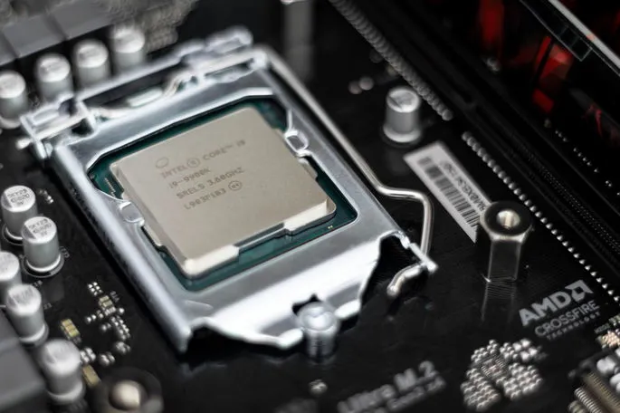

sistemas automatizados
sitemas hechos por el hombre y controlados por varias computadoras, estos sistemas estan compuestos por:
- personas
- proveen y consumen lo que produce el sistema
- hardware
- CPU, discos, ipresoras, servidores
- software
- SO, BDD, progamas de aplicacion, interfaces, etc
- procesamientos
- politicas e instrucciones para operar el sistema
- documentacion
- manuales, capacitacion, formularios, modelos que describen y explican el sistema
el software es parte de un sistema automatizado
concepto de software
tipos de software:
- software generico
- producto de software desarrollado para varios clientes con requerimietos generalizados
- software especifico
- producto de software desarrollado de manera especifica
importancia del software
- forman parte de la cultura de las personas con el surgimiento de las redes sociales
- son el corazon de muchisimos sistemas de produccion
- el osftware esta involucrado en casi todas las actividades, productos y servicios
- el software maneja el recurso mas valioso actualmente (la inoformacion)
problemas en el desarrollo de software
a medida que el software empezaba a cobrar cada vez mas importancia en nuestras vidas, la demanda incrementaba, la competencia crecia, y los desarrolladores individuales que eran en su mayoria matematicos y fisicos empezaban a verse sobrepasados debido a:
- tiempos mas reducidos de desarrollo
- mayor calidad en el software
- una demanda aun mayor
- dificultad para trabajar en grupo debido a diferentes enfoques individuales y carencias de estandares
a estos problemas se le conocio como
era necesario brindarle un enfoque de ingenieria al desarrollo de software
la ingenieria de software
la ingenieria de software es una familia de disiplinas (ya que provienen de diferentes ramas: logica, matematica, linguistica, administracion y psicologia) tecnicas y no tecnicas que evolucionan constantemente (modificando agregando y reemplazando)y brinda un enfoque sistematico, disciplinado y cuantificable en las distintas etapas del proceso de desarrollo de software;desde su especificacion hasta su mantenimieto y retiro. Abarcando un conjunto de tecnicas, procesos diciplinados y principios que provienen de ramas de la logica, matematica, estadistica, linguistica y psicologia, enfocados en alcanzar una alta eficiencia, calidad y rentabilidad en tiempos y presupuestos preestablecidos
| ingenieria de Software | se enfoca en aspectos practicos | desarrollodo de grandes productos de software | busca desarrollar software de manera eficiente a gran escala | |||
|---|---|---|---|---|---|---|
| ingenieria en sistemas | desarrollo de sistemas de computo | abarca: software, personas, procesamietos, herdware | utiliza en gran medida metodologias de desarrollo de software, ya que el sistema esta mayormente compuesto por él |  | ||
| ciencias de la computacion | se enfoca en aspectos teroicos | desarrollodo de pequeños productos de software |